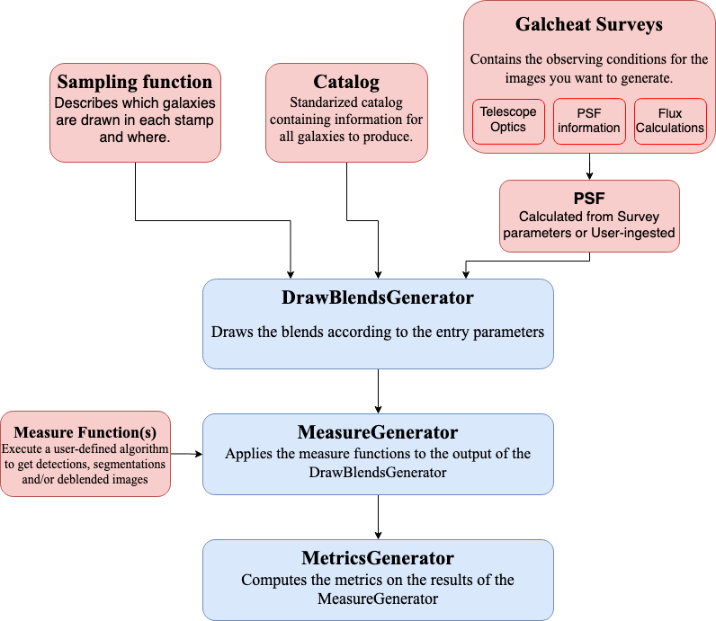

User Guide
This document gives a detailed look into the workflow of BlendingToolKit (btk). For a quick tutorial on how to run btk, take a look at our tutorials. This page is especially useful if you plan to use btk with your own detection/deblending/measurement algorithm. The workflow presented here should be as general as possible.
The workflow is as follows:
Set parameter values: define parameter values to create postage stamps, including size of stamp, number of objects per blend, and how many stamps are to be drawn in one batch – i.e., the number of stamps btk will produce together in a singe batch. The observing survey name (e.g., LSST, DES), the name of the input catalog to draw objects from, and the names of the observing bands are also specified here.
Load Catalog: Reads the input catalog file. This must be done using a
Catalog-like object (e.g.WLDCatalog), either by providing directly the catalog or by using thefrom_file()method.Specify the
SamplingFunction: A sampling function is a callable object, which takes into input a catalog and returns specific entries along with parameters for a given blend (such as object shifts in the stamp for instance). You may use the default classDefaultSamplingFunction, or define a new one if you want to have more control over how the galaxies are selected and the blends are defined. NOTE: The default sampling function performs a cut ofref_mag < 25.3. Please take a look at our tutorials page for more details.Choose a survey: BTK now relies on the galcheat package. This package contains informations on various survey, including LSST, HSC and HSC COSMOS (among others). It provides this information as a
Surveyobject, which can be easily imported in BTK using its name, via the get_surveys function. It is also pretty simple to tweak the parameters of the survey at this stage. The user can also provide a custom PSF at this point, either as a Galsim model or with a FITS file (there is also a possibility to randomize the PSF if needed), or use the default PSF provided by BTK.Draw blends: Simulates scene of overlapping objects, convolved by the PSF and with pixel noise. This step is done by creating a
DrawBlendsGenerator-like object (e.g.WLDGenerator), which is given the catalog, sampling function and survey created in step 2 to 4. It can then be called usingnext(draw_blends_generator)to get the results as a dictionary, including the blends with the keyblend_images, the isolated galaxy images with the keyisolated_imagesand the blend parameters with the keyblend_list. In the case where multiple surveys were provided in step 4, each entry will instead take the form of a dictionary indexed by the survey names, with each value corresponding to the information for one of the surveys. Fluxes in BTK are calculated using galcheat based on themag2counts()function and corresponding survey and filter parameters. Please see the galcheat documentation for more details.Detection/Deblending/Measure: Performs user-defined measurements (detection, segmentation, deblended images) on the generated blends. The user may create a
MeasureGenerator, providing the draw blends generator from step 5 as well as one or several measure function(s), which perform the measurements on one blend. The user is expected to write his own measure function, an implementation for SEP (SourceExtractor with python) is available as an example here and a more detailed explanation on how to implement your own measure function is available in the tutorials page.Compute metrics: Matches the detections to the true galaxies and compute metrics relative to the quality of the detection, segmentation and deblended images. This is achieved using a
MetricsGeneratorobject, which takes as an argument the measure generator from step 6. For users that do not wish to use the whole BTK framework, the functioncompute_metrics()can be used directly to compute the metrics by directly providing the data.